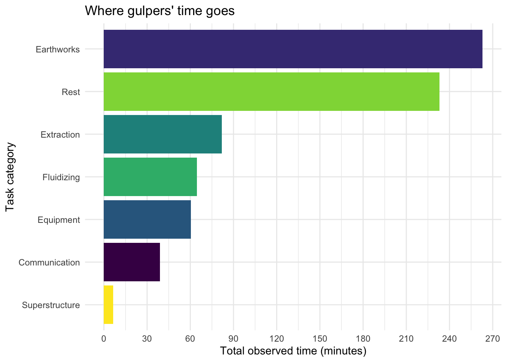
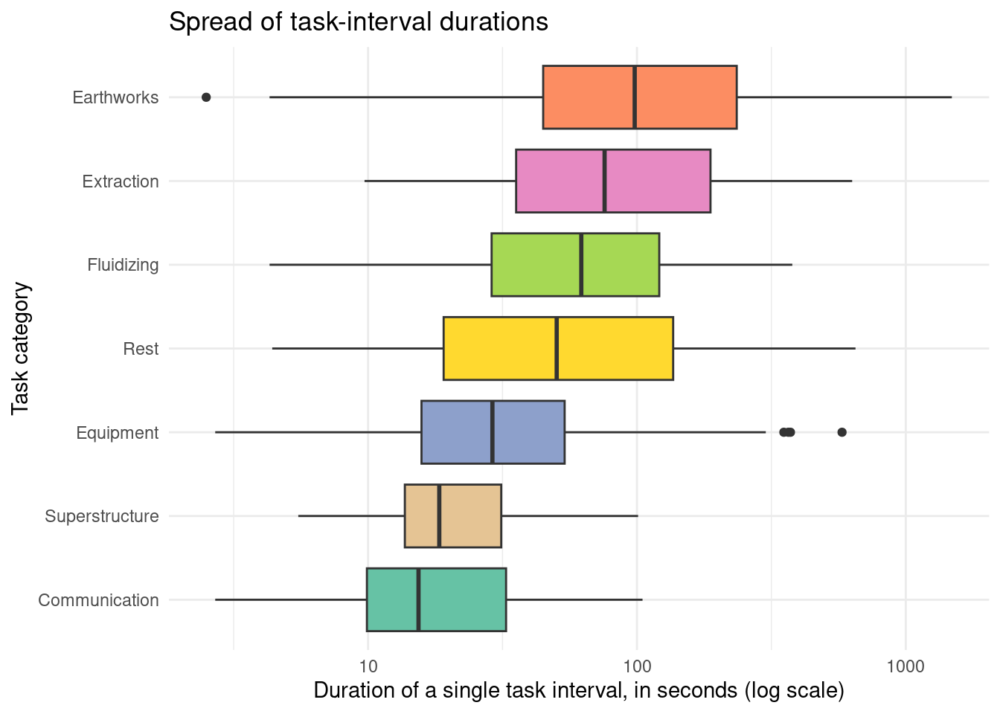

library(tidyverse)
library(knitr)Where Does the Time Go? A Time-Driven Activity-Based Costing Analysis of Informal Pit Latrine Emptying in Mzuzu, Malawi
Introduction
Informal pit latrine emptying is a critical but under-studied link in faecal sludge management (FSM) chains across Sub-Saharan African cities, where a majority of urban residents rely on on-site sanitation and manual emptiers to keep pits usable (Diop and Mbéguéré 2017; Brands et al. 2022). Understanding the true cost of these informal services requires accurate data on how emptiers actually spend their time, since existing cost estimates are often built on interviews or rough assumptions rather than direct observation. Time-Driven Activity-Based Costing (TDABC) addresses this gap by decomposing a service into discrete tasks, timing each one directly, and multiplying observed durations by cost-driver rates, an approach that has previously been applied to sanitation-adjacent processes such as compost production in Malawi (Yesaya, Mpanang’ombe, and Tilley 2021; Kaplan and Anderson 2004). This report applies the same logic to a TDABC study of informal pit latrine emptying (“gulper”) services in Mzuzu, Malawi, conducted as part of doctoral research at ETH Zürich. Three ridealong observation sessions are combined into a single processed dataset here to characterise how gulpers’ time is distributed across the tasks that make up an emptying job.
Methods
Data were collected through structured ridealong observation, in which an enumerator timed one or more gulpers working in parallel on a single emptying job using a custom mobile data collection tool that logged the start and end of every interval. Here, an interval refers to one continuous row in the raw data: the length of time a single gulper spent on one subtask, from the moment they started it until they switched to a different subtask or task. Each of the three raw session files therefore records one row per interval: the gulper performing it, the high-level task and specific subtask, start and end clock times, duration in seconds, and a job identifier linking entries to their parent session. Because the collection tool pads each file with blank spacer rows and columns, the cleaning step below removes any column that is entirely missing and any row that is entirely missing before the three sessions are row-bound into a single combined dataset. Two columns are derived during cleaning, job_date (parsed from job_id) and source_file, to preserve session-level provenance, and the resulting analysis-ready dataset is written to data/processed/processed_data.csv.
Task and subtask categories
The raw data organise every observed interval under one of seven high-level tasks, most of which are broken down into more specific subtasks:
- Earthworks — physical work on the pit itself: digging a trench, filling the trench back in, cutting a hole in the pit liner, and repairing the liner afterward.
- Fluidizing — preparing the sludge for removal by adding water: fetching water, adding it to the pit, and mixing it in.
- Extraction — the core removal step: manually removing sludge from the pit and pulling out solid trash mixed in with it.
- Equipment — handling tools and containers: maneuvering them into position, cleaning them, and occasional repairs.
- Superstructure — work on the latrine structure above the pit: inspection, with occasional cleaning or repair.
- Communication — coordination talk, either with the client or between gulpers on site.
- Rest — recovery breaks between other tasks; recorded as a single undifferentiated category with no subtask breakdown.
Install libraries
Import and combine
raw_dir <- "/cloud/project/data/raw"
raw_paths <- list.files(raw_dir, pattern = "\\.csv$", full.names = TRUE)
# Imports and cleans one raw session file: drops spacer columns/rows and
# tags the result with its source file and job date for provenance.
read_and_clean <- function(path) {
read_csv(path, show_col_types = FALSE) %>%
select(where(~ !all(is.na(.)))) %>% # remove empty columns
filter(if_any(everything(), ~ !is.na(.))) %>% # remove empty rows
mutate(
source_file = basename(path),
job_date = as.Date(str_extract(job_id, "^\\d{4}-\\d{2}-\\d{2}"))
)
}
gulper_data <- map_dfr(raw_paths, read_and_clean)
glimpse(gulper_data)Rows: 453
Columns: 10
$ entry_number <dbl> 1, 2, 3, 4, 5, 6, 7, 8, 9, 10, 11, 12, 13, 14, 15, 16…
$ gulper_id <dbl> 4, 23, 23, 23, 4, 23, 23, 4, 23, 4, 23, 4, 4, 4, 23, …
$ task <chr> "Earthworks", "Earthworks", "Rest", "Earthworks", "Re…
$ subtask <chr> "Dig trench", "Dig trench", NA, "Dig trench", NA, NA,…
$ entry_start_time <time> 10:29:07, 10:29:27, 10:30:11, 10:31:55, 10:31:58, 10…
$ entry_end_time <time> 10:31:58, 10:30:11, 10:31:55, 10:32:25, 10:34:13, 10…
$ duration_seconds <dbl> 171.3, 44.7, 103.4, 30.7, 134.2, 6.0, 130.3, 32.7, 7.…
$ job_id <chr> "2026-05-21_01", "2026-05-21_01", "2026-05-21_01", "2…
$ source_file <chr> "2026-05-21_01.csv", "2026-05-21_01.csv", "2026-05-21…
$ job_date <date> 2026-05-21, 2026-05-21, 2026-05-21, 2026-05-21, 2026…Save processed data
dir.create("/cloud/project/data/processed", showWarnings = FALSE)
write_csv(gulper_data, "/cloud/project/data/processed/processed_data.csv")Results
Time by task category
task_time <- gulper_data %>%
group_by(task) %>%
summarise(total_minutes = sum(duration_seconds) / 60) %>%
arrange(desc(total_minutes))
ggplot(task_time, aes(x = fct_reorder(task, total_minutes), y = total_minutes, fill = task)) +
geom_col(show.legend = FALSE) +
coord_flip() +
scale_fill_viridis_d() +
labs(
x = "Task category",
y = "Total observed time (minutes)",
title = "Where gulpers' time goes"
) +
theme_minimal()
Figure 1 shows that Earthworks and Rest together account for roughly two-thirds of all observed time, while Communication, Fluidizing, Equipment and Superstructure make up the remainder despite occurring more often as short interludes between other tasks. This suggests that trench-digging and idle recovery time, rather than the sludge-handling tasks most associated with “emptying,” are the largest time (and likely cost) drivers in a TDABC model of this service.
Distribution of task-interval durations
ggplot(
gulper_data,
aes(x = fct_reorder(task, duration_seconds, .fun = median), y = duration_seconds, fill = task)
) +
geom_boxplot(show.legend = FALSE) +
scale_y_log10() +
scale_fill_brewer(palette = "Set2") +
coord_flip() +
labs(
x = "Task category",
y = "Duration of a single task interval, in seconds (log scale)",
title = "Spread of task-interval durations"
) +
theme_minimal()
Figure 3 shows that Earthworks combines both a high total and a high median interval duration, while Communication intervals are consistently short with little spread. Rest and Extraction show the widest spread on the log scale, indicating that some individual rest or extraction intervals run far longer than a typical interval of that type.
Summary statistics
task_summary <- gulper_data %>%
group_by(task) %>%
summarise(
n = n(),
mean_sec = round(mean(duration_seconds), 1),
median_sec = round(median(duration_seconds), 1),
sd_sec = round(sd(duration_seconds), 1)
) %>%
arrange(desc(n))
kable(
task_summary,
col.names = c("Task", "N intervals", "Mean (s)", "Median (s)", "SD (s)")
)| Task | N intervals | Mean (s) | Median (s) | SD (s) |
|---|---|---|---|---|
| Rest | 131 | 106.7 | 50.3 | 133.5 |
| Communication | 93 | 25.1 | 15.4 | 23.3 |
| Earthworks | 83 | 190.1 | 98.1 | 238.1 |
| Equipment | 48 | 75.6 | 27.6 | 121.7 |
| Fluidizing | 48 | 80.8 | 62.2 | 71.7 |
| Extraction | 38 | 129.2 | 75.8 | 140.3 |
| Superstructure | 12 | 32.6 | 18.4 | 33.4 |
Table 1 confirms these patterns numerically: Earthworks has one of the highest mean durations among frequently observed tasks, while Communication is both frequent and brief. The standard deviations show that duration variability, and not just central tendency, differs markedly by task, which matters for setting realistic per-task cost-driver rates in a full TDABC costing model.
Conclusions
- Earthworks and Rest jointly account for roughly two-thirds of all observed gulper time across the three sessions, more than the combined Extraction and Fluidizing tasks conventionally seen as the “productive” core of pit emptying.
- Task durations vary widely in both level and spread: Communication intervals are short and consistent, while Earthworks and Extraction are longer and more variable.
- Individual gulpers differ substantially in both how often and how long they were observed working, pointing to real variation in work allocation across a single job.
- For TDABC-based costing of gulper services, earthworks and rest/recovery time deserve as much attention as the extraction and fluidizing tasks traditionally treated as the core of the job.
- Future work should link this task-duration data to labour cost-driver rates and job-level metadata to produce a complete per-job cost estimate.
References
Brands, Jordan, Leandra Rhodes-Dicker, Wali Mwalugongo, Ruthie Rosenberg, Lindsay Stradley, and David Auerbach. 2022. “Improving Management of Manually Emptied Pit Latrine Waste in Nairobi’s Urban Informal Settlements.” Waterlines 41 (1): 35–50. https://doi.org/10.3362/1756-3488.20-00003OA.
Diop, Becaye Sidy, and Mbaye Mbéguéré. 2017. “Dakar: Organising the Faecal Sludge Market.” FSM Innovation Case Study.
Kaplan, Robert S., and Steven R. Anderson. 2004. “Time-Driven Activity-Based Costing.” Harvard Business Review 82 (11): 131–38.
Yesaya, Mabvuto, Wrixon Mpanang’ombe, and Elizabeth Tilley. 2021. “The Cost of Plastics in Compost.” Frontiers in Sustainability 2: 753413. https://doi.org/10.3389/frsus.2021.753413.